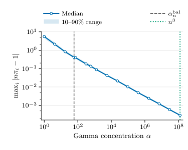
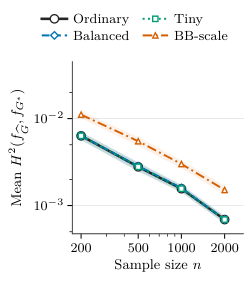

The paper's results are formalized in Lean 4 as an independent check, alongside the numerical study.
Abstract
The nonparametric maximum likelihood estimator (NPMLE) of a Gaussian location mixture maximizes the likelihood over the infinite-dimensional space of mixing distributions. The maximizing mixing distribution can be nonunique, and the classical bound on its number of atoms grows linearly with the sample size $n$. We show that a vanishingly small random perturbation of the likelihood yields exact polylogarithmic sparsity. The resulting randomly reweighted NPMLE maximizes a weighted likelihood whose independent weights, taken to be Gamma in our analysis, concentrate around one as $n$ grows. With high probability, it is unique, has $O\{(\log n/\log\log n)^d+\log n\}$ atoms in dimension $d$, nearly maximizes the ordinary likelihood, and estimates the mixture density at a Hellinger rate that is parametric up to logarithmic factors. This sparsity holds for the estimator itself, not for an approximation of it, and requires no support penalty. The proof rests on an effective-dimension principle for positive kernel mixtures: low-dimensional variation of the fitted values controls the support of every extreme point of the set of maximizers. Numerical illustrations verify that the reweighted NPMLE has Hellinger risk and support size comparable to those of the ordinary NPMLE.
Problem
The nonparametric maximum likelihood estimator (NPMLE) of a Gaussian location mixture can be nonunique. The classical bound on its number of atoms grows linearly with the sample size n, and no polylogarithmic bound was known in several dimensions.
Approach
The estimator maximizes a weighted likelihood with independent Gamma weights that concentrate around one as n grows. An effective-dimension principle for positive kernel mixtures shows that low-dimensional variation of the fitted values controls the support of every extreme maximizer. For Gaussian kernels, this low-dimensional structure comes from a Taylor-series low-rank approximation of the fitted vectors. The results are checked by numerical experiments and a Lean 4 formalization.
Results
With high probability, the randomly reweighted NPMLE is unique and has O((log n/log log n)^d + log n) atoms. Its ordinary log-likelihood gap is O(1/log n), and it attains a Hellinger rate that is parametric up to logarithmic factors. In simulations, its Hellinger risk and support size are comparable to those of the ordinary NPMLE.

Figure 1: Regularization path on a fixed n=500 sample from the three-point mixture. Curves show medians across 30 independent Gamma-weight draws and bands show the 10th and 90th percentiles. The dashed and dotted vertical lines mark the balanced concentration and n^{3} , respectively.

Figure 3: Estimated Hellinger risk, the Monte Carlo mean of the squared Hellinger loss, as a function of sample size. Shaded bands show pointwise Monte Carlo means plus or minus 1.96 standard errors.